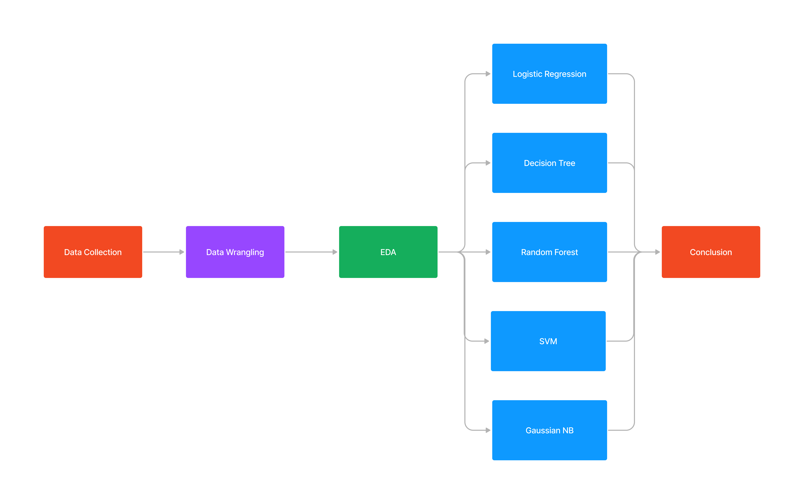
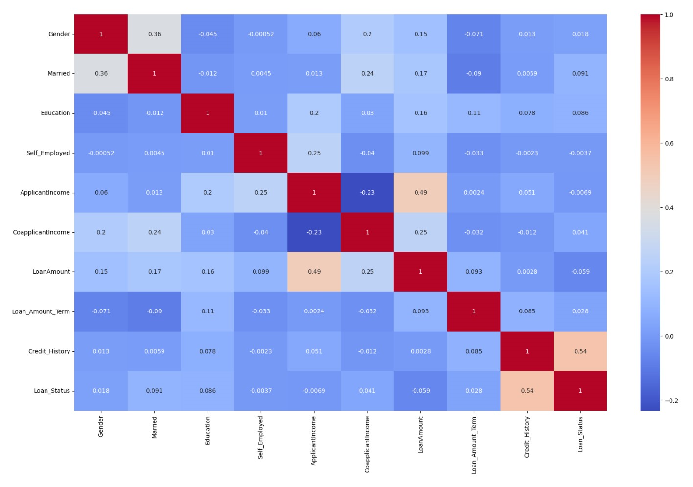
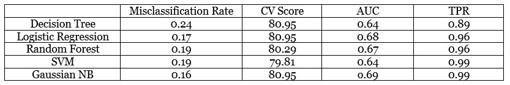

Best Classifiers for Loan Approval Prediction
By Dongsuk Jeong | April 2023
Purpose
• Through EDA, Find out the insightful facts from the loan approve dataset
• To investigate which Classifiers among Logistic Regression, Decision Tree, Random Forest, SVM, and Guassian NB perform the best with dataset
Methodology
Data Collection & Wrangling
• Collected the loan approval dataset from Kaggle
• Response variable(loan status) is binary type, which is "Approved" or "Denied"
• Predictor variable include loan status, Dependents, education, self employed, application income, loan amount, and credit history
• Removed null and duplicate data entries
• Removed the outliers using z-score method
• Transformed the quantitative variables to numerical value for analysis
Exploratory Data Analysis
• Found out that male tend to have more loan approval than female
• Marriage actually makes it easier to get loan approval compared to non marriage
• More dependents makes it hard to get loan approval
• Education degree makes it easy to get loan approved and self employee person tend to get less loan approved
• Semi-urban area showe the most loan approval than urban and rural area
• From the applicant income density plot below, it indicates that lower range of applicant income showed the most loan approved rate, then decreased grdaually. However, increased again dramatically at the range of high income range
• For loan amount density plot, it seems like middle range of loan amount tend to get approved than other amounts. It also decreased grdually after reaching the peak around $150,000, but increased again around the laon amaount of $250,000.
This indicates that people in high income range tend to borrow higher amount than other income range
• From the correlation heatmap below, it shows that relationship between loan amount and applicant income and relationship between credit history and loan status have relatively high correlation than others, but since it is 0.49 and 0.54 respectively, it is considered okay to include in the model
Performance Comparison Table

• Splited data 80% for training and 20% for test
• Used 5 fold Cross Validation to find the optimal value for hyperparameter if needed
• For Decision Tree, set up the optimal max depth to 2
• For Random Forest, set up the optimal max depth to 6 and the minimum sample split size to 8
• Used default setting for other classifiers
• Used accuracy rate, Confusion matrix and ROC curve for model evaluation
Conclusion
• As a result, Gaussian NB showed the best performance with 0.16 misclassification rate and 0.99 true positive rate (TPR)
• Logistic regression performed the second best except TPR since SVM has 0.99 which is same with Gaussian NB
since our dataset only has the two class in response variable, this would be the reason that logistic regression performed well
• Random forest and SVM have the same accuracy score, but CV score and AUC of random forest is higher than SVM
• Decision tree overall showed the worst performance among 5 classifiers